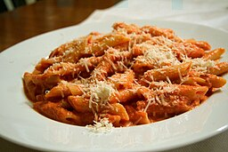

Penne alla Vodka

Description
Penne alla vodka is a pasta dish of penne in vodka sauce: a tomato and cream sauce with some vodka, and sometimes small meats and vegetables such as sausage, pancetta or peas. Sometimes other pasta shapes are used. The vodka emulsifies the sauce and enhances flavor. While most of the alcohol evaporates during cooking, a very small amount may remain. The final dish contains minimal alcohol. It is usually topped with grated Parmesan cheese in amount as desired, as with ground pepper. The recipe became very popular in Italy and in the United States around the 1980s, when hungry people would eat it after a night at the disco. Penne alla vodka remains popular in Italian-American cuisine.
ingredients
- 1 pound uncooked penne pasta
- ¼ cup extra virgin olive oil
- 2 (3.5 ounce) links sweet Italian sausage
- 4 cloves garlic, minced
- ½ teaspoon crushed red pepper flakes
- 1 (28 ounce) can crushed tomatoes
- ¾ teaspoon salt
- ½ cup heavy whipping cream
- 2 tablespoons vodka
- ¼ cup chopped fresh parsley
Instructions
- Gather the ingredients.
- Bring a large pot of lightly salted water to a boil. Add penne and cook, stirring occasionally, until tender yet firm to the bite, about 11 minutes. Drain and set aside.
- Meanwhile, heat oil in a large skillet over medium heat. Remove casing from sausage and add to the skillet. Cook and stir until crumbly and brown, 5 to 7 minutes. Add garlic and red pepper flakes; cook and stir until garlic is golden brown.
- Add tomatoes and salt; bring to boil. Reduce heat and simmer for 15 minutes.
- Add cream and vodka; bring to boil. Reduce heat to low and add pasta; toss for 1 minute. Stir in parsley; serve warm.
Home